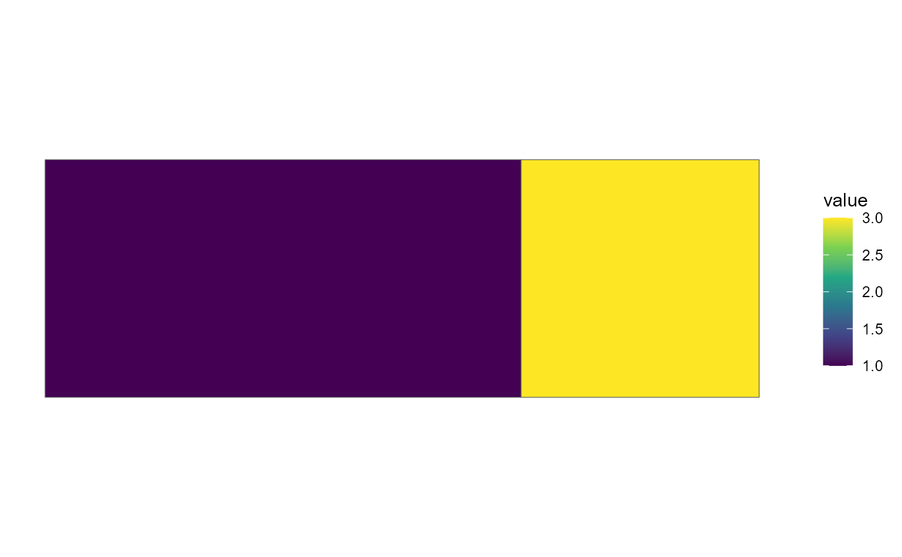

Composable choropleth layers that put region-keyed data on a map inside
a normal ggplot() pipeline (the assembled-figure counterparts are
geoscale_plot() and geoscale_autoplot()):
Usage
geom_geoscale(
gs,
z = NULL,
geoframe = NULL,
region = NULL,
fun = mean,
data = NULL,
precision = 0,
...
)
theme_geoscale(...)Arguments
- gs
A
Geoscalewith attached geometry (seeattach_geometry_geoscale()).- z
Name of the numeric column of the data to aggregate and fill by;
NULLdraws plain boundaries.- geoframe
Geoframe to draw.
NULLis inferred: the single geoframe name among the data's columns (as inrecast_geoscale()), or the atom geoframe whenz = NULL.- region
Name of the region-code column of the data. Defaults to the
geoframe-named column when present, else"region".- fun
Aggregator collapsing multiple observations per region into one value. Default
mean.- data
A
data.frame;NULL(default) uses the plot data.- precision
Optional GEOS precision for the dissolve, forwarded to
geoscale_geometry(). Default0= off.- ...
Passed to
ggplot2::geom_sf()(e.g.colour,linewidth), or fortheme_geoscale()toggplot2::theme().
Value
A ggplot2::geom_sf() layer (theme_geoscale() returns a
theme).
Details
geom_geoscale()— dissolves the object's geometry atgeoframe(viageoscale_geometry()), aggregates the value columnzper region withfun, and returns a standardggplot2::geom_sf()layer (with itscoord_sf, exactly asgeom_sf()does) filled by the aggregatedvalue. Withz = NULLit draws plain boundaries.theme_geoscale()— the quiet map theme: no axes or graticule text, solid white plot background (transparent figures are illegible on dark-mode pages).
The geoscale inputs are column names, not aes() mappings — each
call returns one plain sf layer whose data is derived from the plot
(or layer) data, so discrete/continuous scales, facets, and themes
work through the normal ggplot2 path, and further layers (labels,
points) stack on top.
Examples
if (requireNamespace("ggplot2", quietly = TRUE) &&
requireNamespace("sf", quietly = TRUE)) {
library(ggplot2)
sq <- function(x0) sf::st_polygon(list(cbind(
c(x0, x0 + 1, x0 + 1, x0, x0), c(0, 0, 1, 1, 0))))
gs <- geoscale_from_leaftable(
data.frame(state = c("N", "N", "S"), atom = c("a", "b", "c"),
km2 = c(1, 2, 3)),
geoframes = c("state", "atom"), name = "toy"
) |>
attach_geometry_geoscale(sf::st_sfc(sq(0), sq(1), sq(2)))
# data keyed at the drawn geoframe (recast finer data up first)
ggplot(data.frame(state = c("N", "S"), capacity = c(1, 3))) +
geom_geoscale(gs = gs, z = "capacity", geoframe = "state") +
scale_fill_viridis_c() +
theme_geoscale()
}
